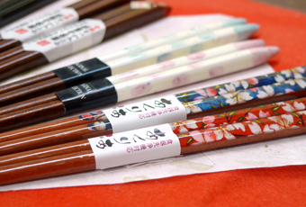
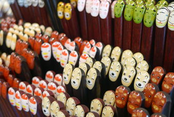

SHOP INFORMATION倉敷のお箸やさん 遊膳倉敷店
600種類以上の箸専門店

美観地区の倉敷川沿いに位置する「遊膳」は、近辺では珍しい箸の専門店。店内にはなんと600種類以上もの箸が並んでいます。女性に人気の可愛らしいデザインのものから、和風のシックな柄まで種類が豊富。その他、箸置きや箸ケース、箸袋、弁当箱などもあります。
おすすめの箸
干支の柄が入った「干支箸」は一番人気の商品です。家族へのお土産として買われる方が多いそうです。お店では、名前やメッセージを無料で彫刻してくれるサービスがあるので、家族の名前をそれぞれに入れてもいいですね。その他、お子さんやお父さんに人気の新幹線の箸や、本物の貝を埋め込んだ箸、手描きの蒔絵が愛らしい箸など、素敵なものがたくさんあります。携帯に便利な箸もあるので、お洒落にマイ箸を持ち歩いてみてはいかがでしょう。
珍しくて面白い箸に出会えるお店

お店の場所は倉敷駅から歩いて約13分、「日本郷土玩具館」からすぐのところです。周辺には「倉敷民藝館」や「倉敷市立美術館」などの観光スポットがたくさんあります。お店の奥には、豆つかみを体験できるコーナーがあり、箸の正しい持ち方が学べます。うどん用やラーメン用といった面白い箸もたくさんあるので、見ているだけでも十分に楽しめるお店です。
Googleマップでみる
一覧に戻る